margheRita.RmdUntargeted metabolomics studies by mass spectrometry technologies generate huge numbers of metabolite signals, requiring computational analyses for post-acquisition processing and dedicated databases for metabolite identification. Web-based data processing solutions frequently include only a part of the entire workflow thus implying the use of different platforms. The R package margheRita addresses the complete workflow for metabolomic profiling in untargeted studies based on liquid chromatography (LC) coupled with tandem mass spectrometry (MS/MS). This pipeline is specially advantageous in the case of data-independent acquisition (DIA), where all MS/MS spectra are acquired with high resolution. Interestingly, the R package margheRita enhances fragment matching accuracy by providing an original metabolite spectral library acquired in both polarities using different chromatographic columns.
The package provides:
Source code: https://github.com/emosca-cnr/margheRita
Citation: Ettore Mosca, Marynka Ulaszewska, Zahrasadat Alavikakhki, Edoardo Niccolò Bellini, Valeria Mannella, Gianfranco Frigerio, Denise Drago, Annapaola Andolfo. MargheRita: an R package for LC-MS/MS SWATH metabolomics data analysis and confident metabolite identification based on a spectral library of reference standards. bioRxiv 2024.06.20.599545; doi: https://doi.org/10.1101/2024.06.20.599545
Contacts:
The package has the following dependencies,which are available in CRAN, Bioconductor or github, namely:
ComplexHeatmap, circlize, clusterProfiler, GGally, ggrepel, ggplot2, ggpubr, LSD, MsBackendMsp, openxlsx, pals, pcaMethods, reshape2, rlang, Spectra, stats, stringr, SummarizedExperiment, utilsIn most of the cases, the following instructions guarantee that all such dependencies are installed:
install.packages("devtools")
if (!require("BiocManager", quietly = TRUE)){
install.packages("BiocManager")
}
BiocManager::install(c("Biobase", "ComplexHeatmap", "clusterProfiler", "pcaMethods"))
devtools::install_github("emosca-cnr/margheRita")margheRita is intended to be used after having done a number of data acquisition steps through MS-Dial (Tsugawa et al. 2015). It requires two text files in tab-delimited format:
A couple of remarks:
short sample ids yield better figures;
the collapse of technical replicates (see below) takes place over all samples that share the same concatenation of “class” and “biological_rep” values.
Here we demonstrate the use of margheRita using the “Urine” dataset, files “Urine_RP_POS_norm.txt” and “Urine_RP_POS_sample_annotation.txt”, available in Zenodo.
The function read_input_file() reads the two files and
creates the object of class “mRList”, which is used by most of
margheRita functions as main input/output.
mL <- read_input_file(feature_file = "Urine_RP_POS_norm.txt", sample_file = "Urine_RP_POS_sample_annotation.txt")
Reading MS-Dial input file...
[1] 33554 316
Reading sample annotation
# Samples: 316
# QC Samples: 61
class(mL)
[1] "mRList"
table(mL$sample_ann$class)
AA Blank DD MM meal A meal B meal C
81 3 81 81 3 3 3 The initial object contains the following elements
which are:
data: features-by-samples matrix containing metabolite abundances;
metab_ann: metabolite annotation;
sample_ann: sample annotation;
QC: features-by-samples matrix containing metabolite abundances of QC samples;
QC_ann: annotation of QC samples.
The function filtering() runs filters
to exclude features/sample with many missing values, features with wrong
m/z values and, lastly, performs imputation of missing values. These
three steps can be called independently through the function
filter_NA(), m_z_filtering() and
imputation(), respectively. In particular,
m_z_filtering() remove features with m/z that have decimal
value within [4, 8] (by default), while the imputation is performed
replacing NA values with a random number, calculated between 10%-25% of
the minimum value of the feature.
Before filtering we can take a loog at the distributions of m/z decimal values and m/z vs rt using:
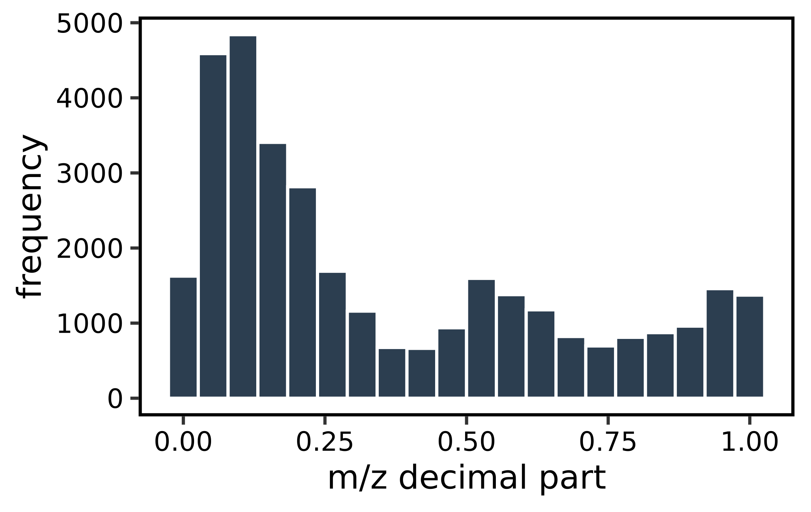
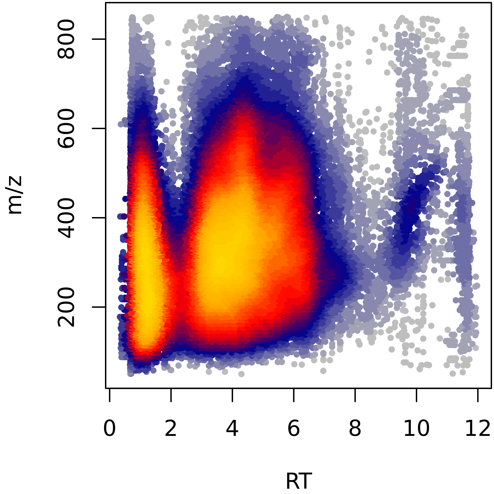
mL <- filtering(mL)
# Samples with >= 100 metabolites 255 / 255
# Features occurring in >= 3 samples 33554 / 33554
# Features with appropriate m/z values: 25786
# Features without appropriate m/z values: 7768
No NAs: imputation not performed.It is useful to look at the distributions of m/z decimals and m/z vs rt after filtering.
plot_mz_decs(mL.id)
heatscatter_chromatography(mL)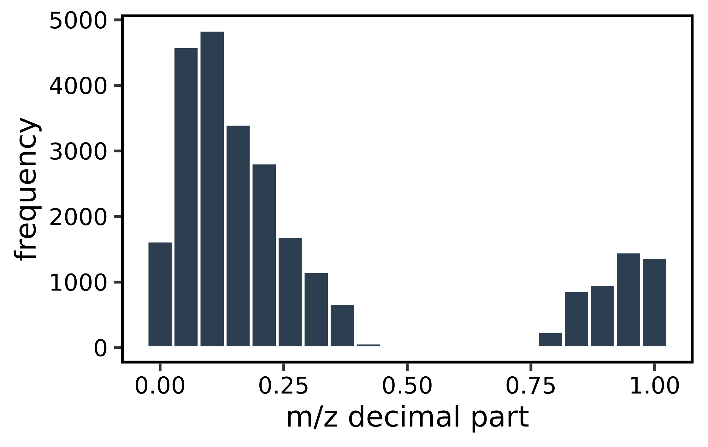
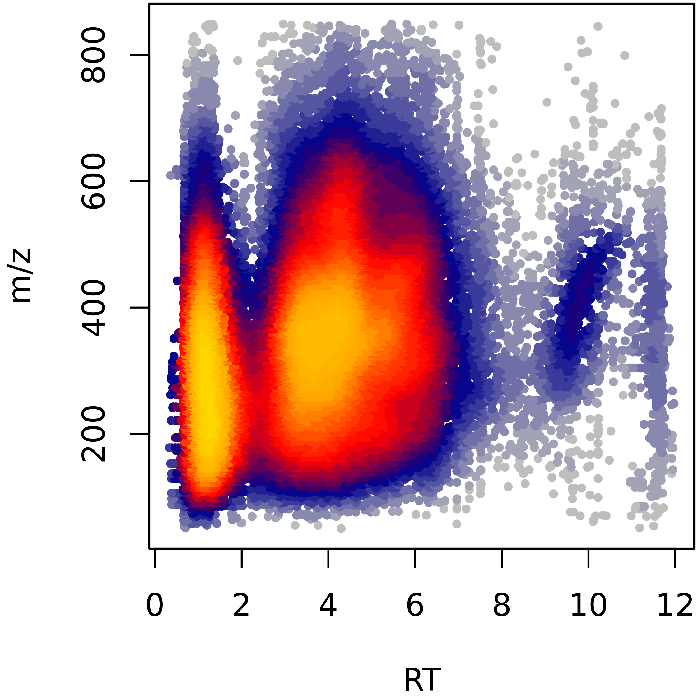
The function remove_samples() allows the user to remove
one or more samples from the mRList. Here, we remove
samples that have values “Blank”, “meal A”, “meal B”, “meal C” in the
column “class”:
mL <- remove_samples(mRList = mL, ids = c("Blank", "meal A", "meal B", "meal C"), column = "class")
removing x001_Blank_1_norm_RP_short_SWATH_pos x002_Blank_1_norm_RP_short_SWATH_pos x003_Blank_1_norm_RP_short_SWATH_pos x306_BananaShake_norm_rtech1_RP_short_SWATH_pos x307_PapayaShake_norm_rtech1_RP_short_SWATH_pos x308_KefirShake_norm_rtech1_RP_short_SWATH_pos x310_KefirShake_norm_rtech2_RP_short_SWATH_pos x311_PapayaShake_norm_rtech2_RP_short_SWATH_pos x312_BananaShake_norm_rtech2_RP_short_SWATH_pos x314_PapayaShake_norm_rtech3_RP_short_SWATH_pos x315_BananaShake_norm_rtech3_RP_short_SWATH_pos x316_KefirShake_norm_rtech3_RP_short_SWATH_pos
table(mL$sample_ann$class)
AA DD MM
81 81 81 margheRita provides three ways for normalizing metabolite profiles:
For “reference” and “pqn” methods, the column reference
must be present in mRList$metab_ann. If missing, the
function calc_reference() sets up such column using average
metabolite values and medians of QC samples. For example, here’s a call
to normalize_profiles() using pqn:
mL.norm <- normalize_profiles(mL, method = "pqn")
PQN normalization
No reference profile found, using calc_reference() function...
Using QC...The comparison of the coefficient of variation of a metabolite in relation to QC samples provides a means to exclude low quality features. In particular, only features that have a CV ratio between no-QC samples and QC sample higher than a given threshold (by default 1) are kept:
CV_ratio(mRList = mL.norm, dirout = dir_out)
Summary of CV ratio (samples / QC):
Min. 1st Qu. Median Mean 3rd Qu. Max.
0.1633 1.3511 2.0665 2.9914 3.7041 36.8086
# Features with appropriate CV 23313 / 25786 Typically, after normalization, the various samples should have similar distributions of relative log-abundance, a powerful tool to visualize unwanted variation in high-dimensional data (Gandolfo 2018).
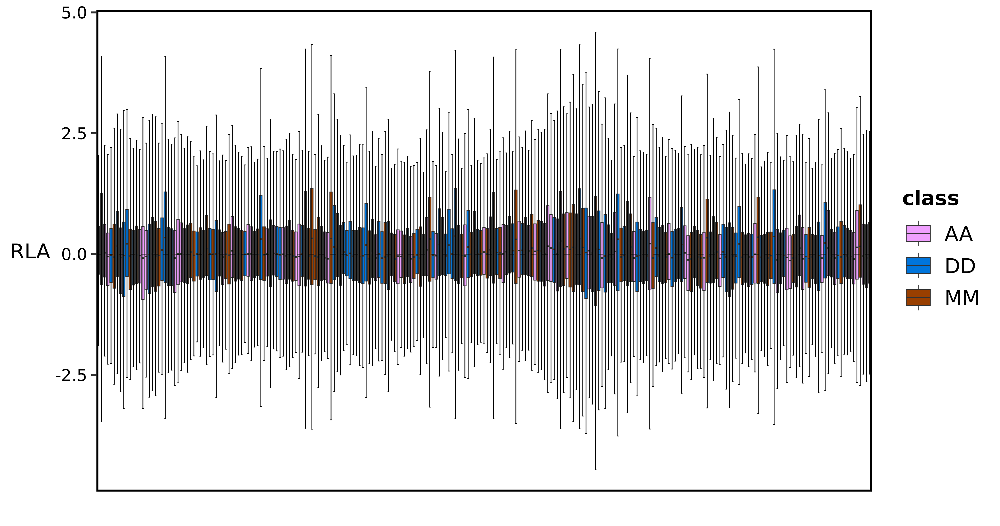
margheRita performs Principal Component Analysis (PCA) using the
function mR_pca(), which relies on the package pcaMethods
(Stacklies et al.
2007). Besides choosing the scaling method (argument
scaling) and number of PCs (nPcS), it allows
to include/exclude quality control samples by means of argument
include_QC:
mL_norm <- mR_pca(mRList = mL_norm, nPcs=5, scaling="uv", include_QC=FALSE)The results are added to the mRList in the element pca.
The function plot_PCA_res() produces a list of two ggplot2
objects, namely pairs and scree, which contain
scatter plots among all-pairs of PCs and the variance explained by the
PCs; similarly, the function Plot2DPCA() generate the
scatter plots for the scores and loadings (not shown below). The column
col_by indicates which column of sample annotation is used
to color the samples.
p <- plot_PCA_res(mRList = mL.id, col_by="subj_meal")
Using default palette
names(p)
[1] "scree" "pairs"
Plot2DPCA(mRList = mL.id, pcx=1, pcy=2, col_by="subj_meal")
Using default palette
> names(p)
[1] "scores" "loadings"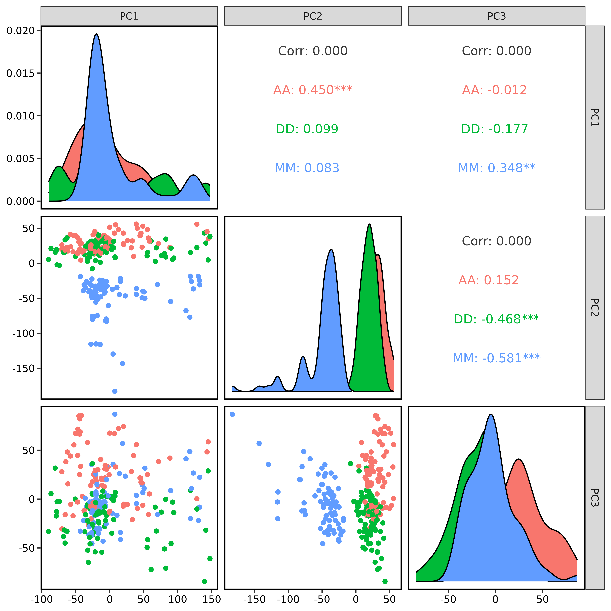
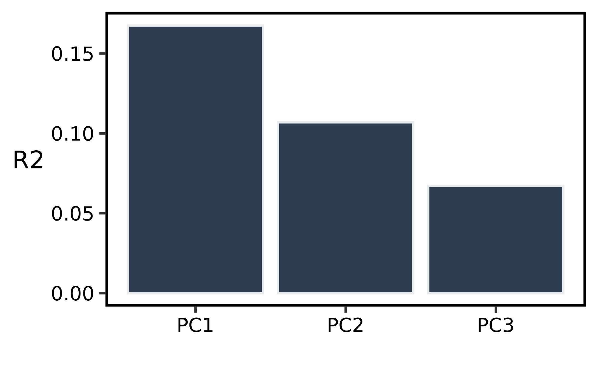
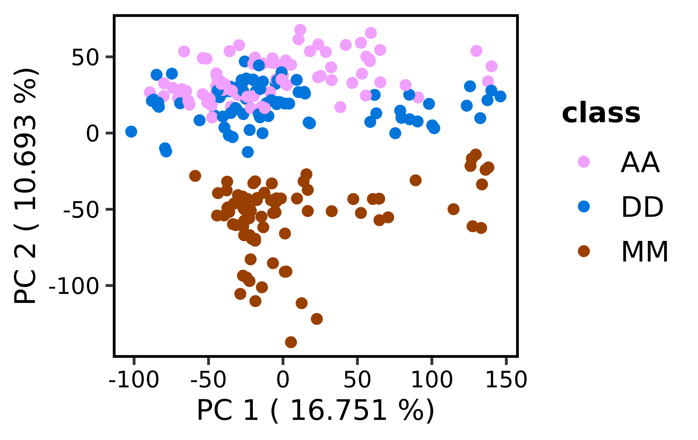
The definition of mean metabolite abundance for every biological
replicate is performed by means of collapse_tech_rep()
function:
MargheRita provides some functions to calculate mean and variability, fold changes and to test for metabolite variations.
The function mean_median_stdev_samples() calculates
mean, median and standard deviation of metabolite abundance according to
the sample classes specified in the column “class” of sample
annotation:
mean_median_stdev_samples(mL.norm.bio)
According to dataset size, this might take a few minutes.
Calculating means...
Calculating medians...
Calculating standard deviations...The function univariate() performs dataset-wide
statistical tests (Student t-tests, Wilcoxon test, Anova and
Kruskal-Wallis test) between levels of a particular factor defined in
the sample annotation:
mL.norm.bio <- univariate(mL.norm.bio, test_method="anova", exp.levels = c("AA", "DD", "MM"), exp.factor = "class")
exp.levels: AA DD MM
exp.factor: class
selected samples:
id level
1 AA_mealA_t00 AA
2 AA_mealA_t01 AA
3 AA_mealA_t02 AA
4 AA_mealA_t03 AA
...
81 MM_mealC_t08 MM
Performing ANOVA between AA DD MM
head(mL.norm.bio$anova)
F p q DD-AA MM-AA MM-DD
F6 0.8784645 4.194894e-01 4.986295e-01 0.40015792 9.074457e-01 0.655270262
F7 78.0339455 2.439819e-19 1.990054e-17 0.26024644 0.000000e+00 0.000000000
F38 2.1888987 1.188756e-01 1.739468e-01 0.10414045 3.829524e-01 0.744258367
F60 0.5589524 5.740810e-01 6.422382e-01 0.96640783 5.700494e-01 0.725243155
F64 9.1681931 2.653785e-04 9.536909e-04 0.02069160 1.914172e-04 0.304841472
F128 15.7198757 1.835949e-06 1.149525e-05 0.09927893 1.127459e-06 0.002473063The full results of the analysis are saved to the text file
We found it helpful to provide a function for retrieving the list of significant features:
significant_features <- select_sign_features(mL.norm.bio, test_method="anova", test_value = "q", cutoff_value = 0.05, feature_id = "Feature_ID")By default the function provides the Feature_ID. After having performed metabolite annotation, it is also possible to retrieve “Name” and “PubChemCID” (see below).
Metabolite identification in margheRita is performed by means of the
function metabolite_identification(), which requires an
mRList object and a reference library with MS and MS/MS metabolite
information. The identification is possible up to level-1, provided that
the required information are available in the reference library. The
identification is based on the quantification of the following
quantities:
Such quantities are used to score the similarity among precursors of features and metabolites, as well as their MS/MS peaks.
The function select_library() provides a means to select
any of two sources:
margheRita, which contains MS and MS/MS information for about 800 metabolites spanning several biological functions; these libraries provideup to level 1 identifications in positive and negative modalities for “HILIC”, “LipC8”, “pZIC”, “RPLong” and “RPShort” chromatographic columns, that are acquired following the methods reported in the supplementary material of Mosca et al. (2024).
MS-Dial, which covers a much larger set of metabolites (), but is limited to level 2 identifications in positive and negative modalities.
We illustrate this data structure selecting the margheRita library in
positive modality with retention times of RPShort columns (using only
peaks with relative intensity of at least 10 percent of the most intense
peak, argument accept_RI=10).
mR_library <- select_library(column = "RPShort", mode = "POS", accept_RI=10)
Library source: margheRita
Column: RPShort
mode: POS
minimum RI: 10
# metabolites: 465The resulting mR_library is a list that contains 4
elements.
The first, lib_precursor is a data.frame that provides
information at metabolite level (we do not show here the 7th column,
SMILES, to simplify the output)
head(mR_library$lib_precursor[, 1:6])
ID CAS Name rt mz PubChemCID
L10 L10 485-80-3 S-(5'-Adenosyl)-L-methionine 0.80 399.14452 34756
L14 L14 61-19-8 Adenosine monophosphate 1.40 348.07037 6083
L17 L17 979-92-0 S-Adenosylhomocysteine 1.28 385.12887 439155
L20 L20 56-86-0 L-Glutamic acid 0.90 148.06044 33032
L30 L30 56-40-6 Glycine 0.85 76.03931 750
L33 L33 56-41-7 L-Alanine 0.88 90.05496 5950The element lib_peaks_data is a data.frame that list
information for the MS/MS spectra
head(mR_library$lib_peaks_data)
ID CAS Polarity Name
1 M1 951-78-0 POS 2'-Deoxyuridine
2 M2 25518-54-1 POS Lauroyl-L-carnitine
3 M3 542-32-5 POS 2-Aminoadipic acid
6 M6 33818-15-4 POS Cytidine 5'-diphosphocholine (Citicoline)
7 M7 3604-79-3 POS 3-Nitrotyrosine
12 M12 110-15-6 POS Succinic acidThe element lib_peaks is a named list with of spectra,
where the first column is m/z while the second is the relative
intensity; here we show the first element, M1:
head(mR_library$lib_peaks$M1)
[,1] [,2]
[1,] 45.03236 10.34602
[2,] 70.02762 12.46120
[3,] 96.00721 13.50730
[4,] 99.04249 17.68019
[5,] 113.03337 100.00000
[6,] 117.05313 20.43913The function library_from_msp() provides a means to
import library encoded as msp files in margheRita, generating the same
data structure generated by select_library():
mR_library_external <- library_from_msp("MSMS-Public-Neg-VS15.msp")
names(mR_library_external)
[1] "lib_precursor" "lib_peaks_data" "lib_peaks" "key_field"Otherwise you must encode you library in the same data structure
generated by select_library().
Once the library is selected, metabolite identification can be
performed by the homonymous function, where the argument
features specifies the features to be considered (all
features if it is left features=NULL, as in the following
example):
mL.norm.bio <- metabolite_identification(mL.norm.bio, library_list = mR_library)
# Features considered: 18026
Checking RT... done
Checking precursor mz... done
Integrating RT and mz results... done
Assembling output for precursors...done
MS/MS analysis...
# library metabolites to consider: 337
100 / 337
200 / 337
300 / 337
done
Assembling final output... Initial associations: 1245
1) Filtering redundant MS/MS spectra for the same metabolite-feature...
by highest number of peaks
by highest peaks ratio...1011
2) 1:n associations between metabolites and features...
by highest peaks ratio
by best annotaiton level
by lowest ppm error...913
3) 1:n associations between metabolites and features, not supported by MS/MS...
by level... 479
by mass (category)... 380
by RT (category)... by RT... 372
by ppm... 368
by ppm... 366
...
Adding annotations to metab_ann...
Adding annotations to data_ann...
Saving excel file metabolite_identification.xlsx...
doneThe function metabolite_identification() has a series of
parameters that can be adjusted to optimize the identification process
(see its documentation). When metabolite identification is applied on a
large number of features (e.g.,
),
it is common to obtain many-to-many associations between features and
metabolite. By default, this redundancy is addressed following an
algorithm that considers the classification (Level 1, Level 2, Level 3a
and Level 3b), the errors (see above) and a series of quantitative and
qualitative scores (see below and Mosca et al.
(2024) for further details). This
function adds/modifies the following items in the mRList and saves each
of them to a sheet of the xlsx file
“metabolite_identification.xlsx”:
mL_norm_bio$metabolite_identification$associations:
annotated features (sheet “associations”)
mL_norm_bio$metabolite_identification$associations_summary:
annotated features, less details on annotation (“summary”):
mL_norm_bio$metab_ann: all features
(“metab_ann”):
mL_norm_bio$data_ann: abundance data for all
features and annotation column “Name” (“data_ann”):
Importantly, the feature-metabolite association filtering can
be disabled (e.g. for exploratory analysis) setting
filter=FALSE.
The spectra from all the features that match a metabolite can be inspected creating the following plot.
visualize_associated_spectra(mL.norm.bio, mR_library = mR_library, metabolite_id = "L1660")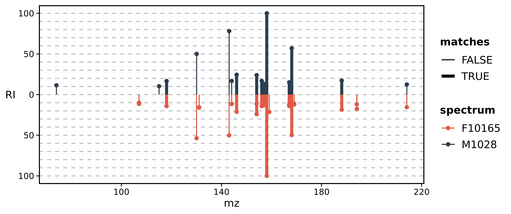
The function h_map_MSMS_comparison() draws heatmaps to
visually compare ppm errors and RI differences between feature and
metabolite spectra:
h_map_MSMS_comparison(mL_norm_bio, metab_id = "L1660", feature_id = "F10165")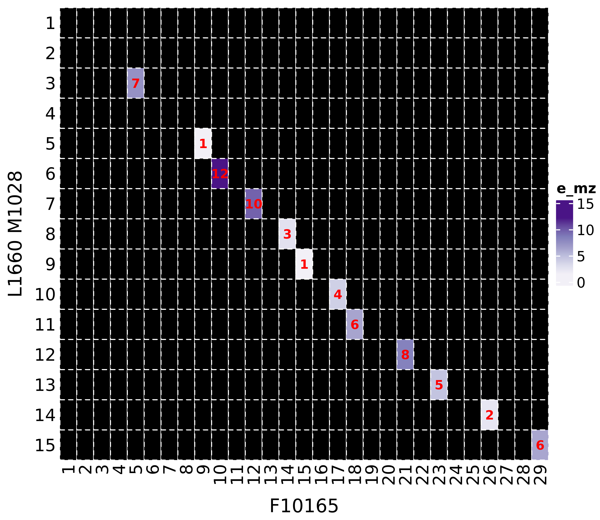
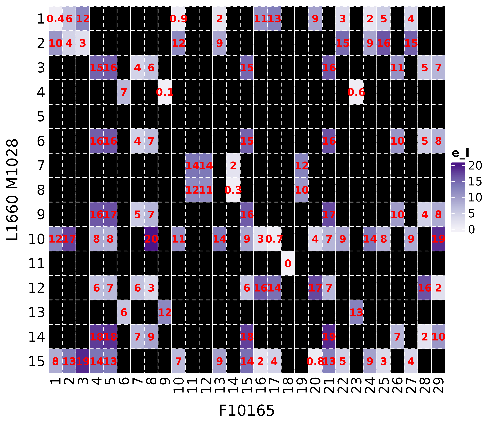
The function metab_boxplot() draws boxplots of feature
abundances grouped by the levels of a given factor:
metab_boxplot(mL.norm.bio, feature = "F3957")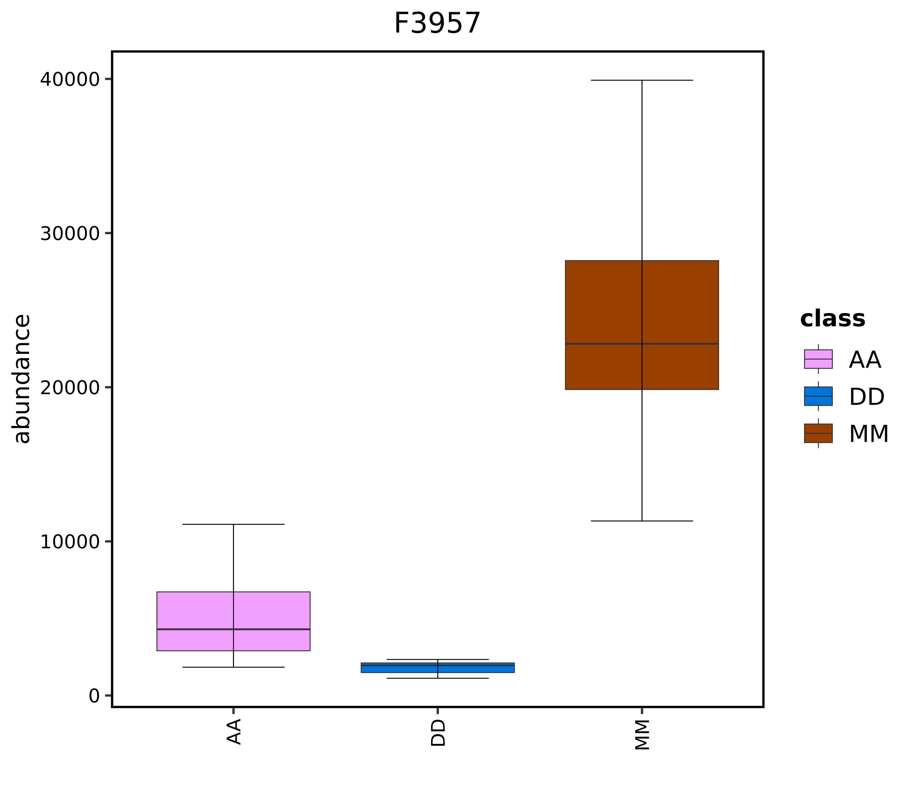
The function h_map() provides heatmaps based on package
ComplexHeatmap (Gu et al.
2016). Here we show the abundance of the most significant
metabolites according to ANOVA test. Note that we set
feature_id = "Name" which indicates to consider only those
features that have a Name column in the annotation, that
is, have been assigned to a metabolite:
significant_features <- select_sign_features(mL.norm.bio, test_method="anova", test_value = "q", cutoff_value = 10e-10, feature_id = "Name")
h_map(mL.norm.bio, scale_features=TRUE, features = significant_features, show_column_names=F, data.use = "data_ann")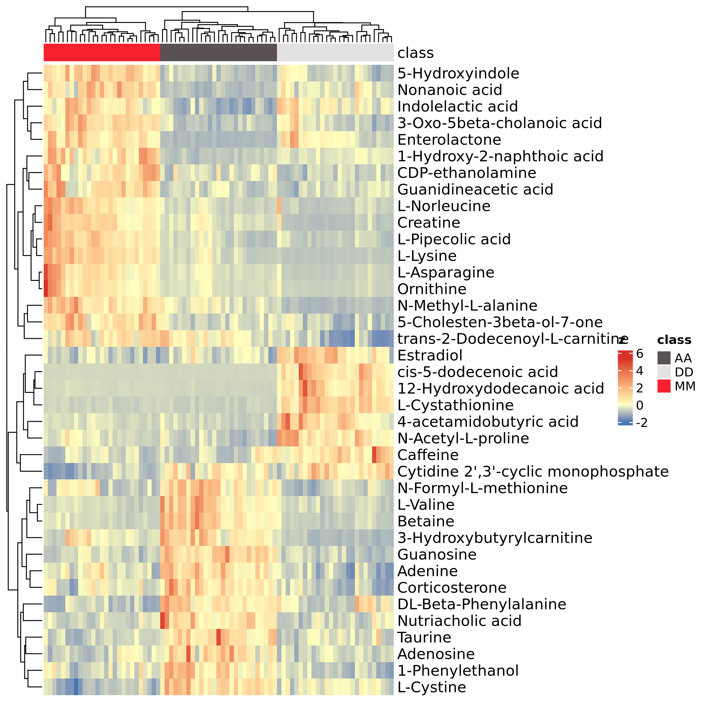
The function merge_stats_w_features() joins the results
of metabolite annotation and statistical analysis, and produces a list
of data frames and an xlsx file creating with the following
items/sheets:
metab_stat: full table with feature annotation and
statistical analysis results;
metab_stat_feat: same as metab_stat,
with the addition of feature intensities;
metab_stat_feat_known: same as
metab_stat_feat, but restricted to features with an
assigned compound;
metab_stat_feat_sig: same as
metab_stat_feat, but only for statistically significant
features;
metab_stat_feat_known_sig: same as
metab_stat_feat, but only for statistically significant
features with an assigned compound.
metab_stats <- merge_stats_w_features(mRList = mL.norm.bio, test_method = "anova", test_value = "q", cutoff_value = 0.05, dirout = dir_out)margheRita implements both Over Representation Analysis (ORA) and
Metabolite Set Enrichment Analysis (MSEA), based on clusterProfiler
(Yu et al. 2012)
over BioCyc, KEGG and Reactome pathway databases. These analyses can be
run by means of function pathway_analysis().
In case of ORA the minimum requirements are the vector of PubChemCID to be tested and the reference universe of all PubChemCIDs in the dataset. In the following example we extract the PubChemCID of the most significant features according to anova and consider all the PubChemCID found in the dataset as reference universe:
significant_features <- select_sign_features(mL.norm.bio, test_method="anova", test_value = "q", cutoff_value = 10e-10, feature_id = "PubChemCID", split_by_semicolon = T)
universe <- select_sign_features(mL.norm.bio, test_method="anova", test_value = "q", feature_id = "PubChemCID", split_by_semicolon = T)
pa_res <- pathway_analysis(significant_features, type = "ora", universe = universe)
loading pathway data...
preprocessing pathway data...
reducing pathway data to the given universe...
ORA...Note that we set the argument split_by_semicolon=TRUE
because the statistical analysis was conducted at feature level and we
can have a
mapping between features and metaboltes, which yields multiple
semicolon-separated PubChemCIDs for the same feature.
In case of MSEA, we obtain a ranked vector of scores
(values = TRUE) for all PubChemCIDs in the dataset, in
decreasing order of importance:
ranked_vector <- select_sign_features(mL_norm_bio, test_method="anova", test_value = "q", cutoff_value = Inf, feature_id = "PubChemCID", values = TRUE, split_by_semicolon = T)
ranked_vector <- sort(-log10(ranked_vector), decreasing = T)
msea_res <- pathway_analysis(in_list = ranked_vector, type = "msea")In both cases (ORA and MSEA), the result is a list that contains:
term_annotation: a table with pathway
descriptions;head(pa_res$term_annotation[, 1:7])
bs_id source source_acc name type tax_id_bs tax_id
66389 82928 KEGG hsa00030 Pentose phosphate pathway pathway organism-specific biosystem 9606
66392 82931 KEGG hsa00052 Galactose metabolism pathway organism-specific biosystem 9606
66393 82932 KEGG hsa00053 Ascorbate and aldarate metabolism pathway organism-specific biosystem 9606
66394 82933 KEGG hsa00061 Fatty acid biosynthesis pathway organism-specific biosystem 9606
66396 82935 KEGG hsa00071 Fatty acid degradation pathway organism-specific biosystem 9606
66398 82937 KEGG hsa00100 Steroid biosynthesis pathway organism-specific biosystem 9606res: an object of class “enrichResult” (ORA) or
“gseaResult” (MSEA), which can be used to obtain various visualizations
through clusterProfiler functions.class(pa_res$res)
[1] "enrichResult"
attr(,"package")
[1] "enrichit"
> class(msea_res$res)
[1] "gseaResult"
attr(,"package")
[1] "enrichit"The packages clusterProfiler
(Yu et al. 2012)
and enrichplot
(Yu et al. 2015)
provide various functions to visualize and export enrichment analysis
results (note that, since such packages are focused on functional
genomics, their terminology mentions genes and gene sets). For example,
here we use barplot() for ORA results and
enrichplot::dotplot() for MSEA results.
barplot(pa_res$res, showCategory=5)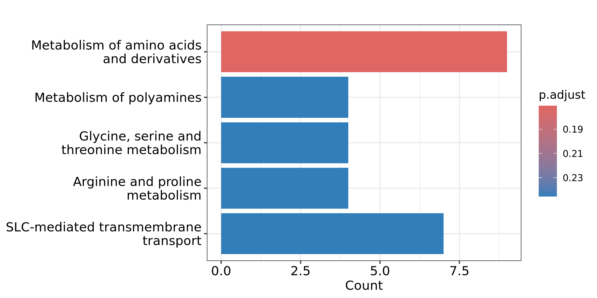
enrichplot::dotplot(msea_res$res, showCategory = 10, split = ".sign")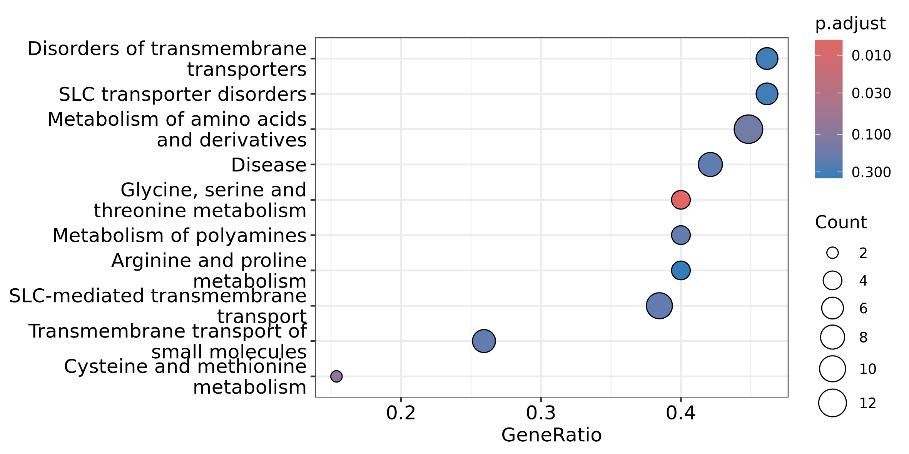
To support interoperability with other packages the mRList can be reorganized as a “SummarizedExperiment” object, which is used by “notame” (Klåvus et al. 2020) and package “POMA” (Castellano-Escuder et al. 2021).
se <- as.SummarizedExperiment(mL)
se
class: SummarizedExperiment
dim: 33554 316
metadata(0):
assays(1): ''
rownames(33554): F1 F3 ... F42636 F42638
rowData names(8): Feature_ID MSDialName ... MS_MS_spectrum Split
colnames(316): x001_Blank_1_norm_RP_short_SWATH_pos x002_Blank_1_norm_RP_short_SWATH_pos ... x309_QC_norm_55_RP_short_SWATH_pos
x313_QC_norm_56_RP_short_SWATH_pos
colData names(7): Sample_ID Injection_order ... biological_rep QC